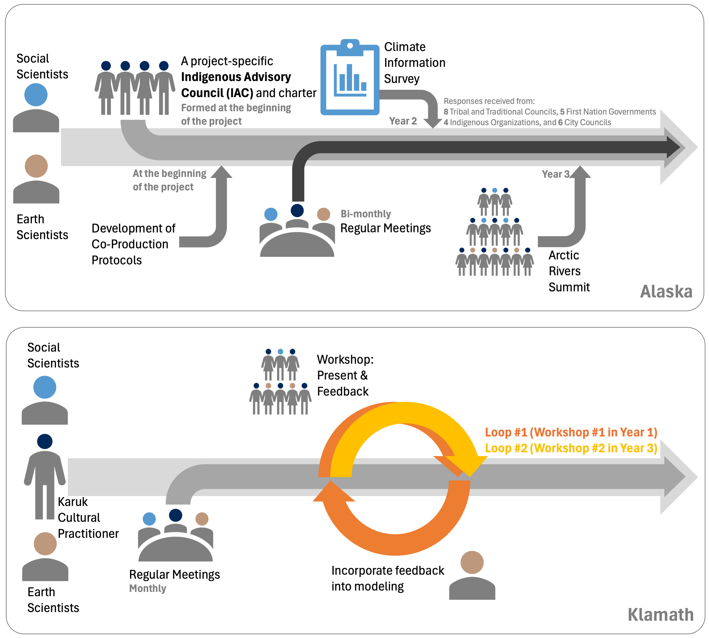
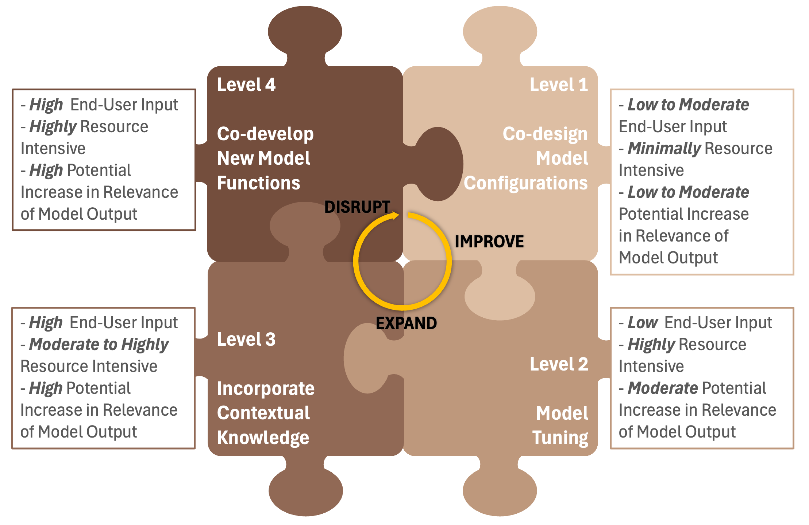

New paper in AGU Advances
Toward Co‑Designed Earth System Models: Reflecting End‑User Priorities in Local Applications From a Modeler's Perspective by Yifan Cheng et al. is now published in AGU Advances.
This paper discusses why and how Earth System Models (ESMs) can be co‑designed with end users to improve local relevance and usability.
In this study, we present two example case studies: the Arctic Rivers Project and the Mid-Klamath Project that involve co-designing ESMs to understand and project regional Earth system changes in partnership with Indigenous communities in Alaska and northern California, respectively. These two case studies illustrate a gradient of community engagement (many vs. one), priorities (restoration vs. adaptation), geographic scale (sub-continental vs. watershed) and economic feasibility (large vs. small budgets), respectively in the Arctic Rivers Project and Mid-Klamath Project.

In the Arctic Rivers Project, we employed several project-oriented collaboration methods, including convening a project-specific Indigenous Advisory Council (IAC), administering a Climate Information Survey, and hosting an Arctic Rivers Summit (illustrated by the upper box in the figure above). In the Mid-Klamath Project, we collaborated with the Karuk Tribe Department of Natural Resources (DNR) in northern California, their non-government organizations (NGO) and agency partners organized through the Western Klamath Restoration Partnership (WKRP). This allowed for a more direct and engaging collaboration style compared to the Arctic Rivers Project, making iterative collaboration feasible (orange circles in the figure above).
Building on these case studies, the paper proposes a practical four‑level framework for co‑design:
- Co-design Model Configurations: Modelers make informed decisions based on input from end users, though these decisions are constrained by existing model capabilities.
- Model Tuning: The modelers improve the simulation accuracy of targeted variables that have been identified by end users as important.
- Incorporate Contextual Knowledge:The modelers work closely with end users to identify knowledge and data sets that are relevant to the model and could be incorporated into the modeling process.
- Co-develop New Model Functions: Developing new modeling capabilities to address local needs is the highest level of co-design.

The framework (shown in the figure above) aims to help researchers plan co-design efforts in a more structured manner. We organize co-design model practices into four levels based on the basic engagement requirements with end users, the potential influence of available decision maker knowledge of the system on model output, and resource intensity. Importantly, a lower-level model co-design practice is not inferior to a high-level one. Lower-level co-designs such as co-design model configurations can also greatly boost the salience and usefulness of the output. Specific cases call for specific levels of co-design.
Read the paper: https://doi.org/10.1029/2025AV001921
a.c.t. hydro lab